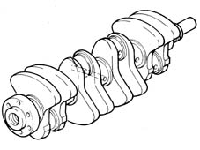
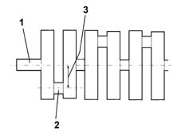
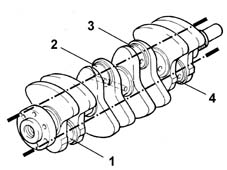
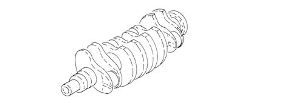
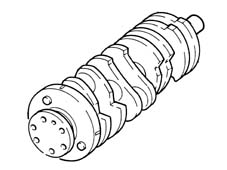
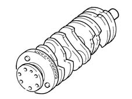
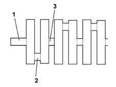

1024A CRANKSHAFT
- Path
- Descriptions > 10 ENGINE > 1024 CRANKSHAFT AND FLYWHEEL > 1024A CRANKSHAFT
- Kind
- system description
- Applies to
- engines: 1.2 8v, 1.4 8v, 1.3 JTD 16V, 1.9 JTD 8V, 1.9 DIESEL; all production periods
- Interactive page
- https://sloeber94.github.io/elrnDB-fDbl/en/#/2582275
Applies to: engines: 1.2 8v; all production periods
Made from spheroidal graphite cast iron, induction hardened. It rests on five main bearings with bearing shells graded into different sizes.
The crankshaft endfloat is optimized by two thrust washers located in relation to the centre main bearing.
Eight counterweights arranged at 180° ensure that the crankshaft rotating masses are perfectly balanced. A channel runs along the inside of the shaft to lubricate the main bearings and big end bearings.

The crankshaft consists of:
- main journals (1), which rotated in the main bearings with bearing shells interposed;
- crank pins (2), over which the connecting rod big ends fit;
- crank arms (3), the same height as half the travel, which connect the main journals to the crank pins.

The shaft is also prepared for:
- the fitting of the flywheel; - the fitting of the sprocket which, via a toothed belt, transmits motion to the timing system components.
The crankshaft is the component which, via the connecting rod, transforms the reciprocating rectilinear motion of the piston into a rotary motion.
It is subjected to forces which vary dramatically in terms of intensity and direction, and must therefore be sufficiently strong.
Its shape is designed according to the:
- number of cylinders
- type of engine (in line, a v, a w, etc.)
- number of main bearings
- number of strokes (2 stroke or 4 stroke)
In order to prevent damaging engine vibrations, the crankshaft should be both statically and dynamically balanced. These vibrations are due to:
- centrifugal forces, generated by the masses with rotary motion (crank pins, big ends, 1/3 of the weight of the connecting rod, crank arms);
- inertia forces, generated by the masses with reciprocating rectilinear motion (piston, gudgeon pin, 2/3 of the weight of the connecting rod).
A shaft is said to be statically balanced when, resting on two supports, it remains balanced irrespective of the rotation position.
A shaft is said to be dynamically balanced when, supported between two points corresponding to the rotation axis and made to rotate, it transmits a reaction equal to half of its own weight to each support.
The addition of counter-weights in suitable positions balances the shaft either statically or dynamically.
However, to lessen the engine vibrations, it is not sufficient to balance the crankshaft, but it is necessary also to ensure that its motion is uniform, by both offsetting the working cycles (following a given firing order) and by fitting the shaft with a suitable flywheel.
The firing order is obtained by offsetting the cranks, in engines with several cylinders, at an angle equal to:
α = 180° x t/i
where:
- t = engine strokes
- i = number of cylinders
In our case (4 stroke engine with 4 cylinders)
The crank offset angle is:
a = 180°x4/4 = 180°
The cranks are arranged on the same plane and in parallel in twos.

There may be two firing orders: 1, 2, 4, 3 or 1, 3, 4, 2; the most common firing order is 1, 3, 4, 1 as the centrifugal forces and inertia forces are more balanced.
Applies to: engines: 1.3 JTD 16V; all production periods
Made from steel, it rests on five main journals and the endfloat is adjusted by two thrust washers located in the rear main bearing.
Eight counterweights ensure that the rotating masses of the crankshaft are precisely balanced.
A series of channels run along the inside of the crankshaft to lubricate the main bearings and big end bearings.

Applies to: engines: 1.9 DIESEL; all production periods
This is of cast iron, it is supported by five main bearings and its endfloat is adjusted by two thrust washers housed in the rear main bearing.
Eight counterweights ensure that the rotating masses of the crankshaft are precisely balanced.
A channel runs along the inside of the shaft to lubricate the main bearings and big end bearings.
At the rear there is a flywheel which contains 4 openings, 90 apart, for the rpm sensor.

Applies to: engines: 1.9 JTD 8V; all production periods
This is of cast iron, it is supported by five main bearings and its endfloat is adjusted by two thrust washers housed in the rear main bearing.
Eight counterweights ensure that the rotating masses of the crankshaft are precisely balanced.
A channel runs along the inside of the shaft to lubricate the main bearings and big end bearings.
A flywheel for the rpm sensor is fitted at the rear.

Applies to: engines: 1.4 8v; all production periods
CONSTRUCTION SPECIFICATIONS
Made from induction hardened cast iron. Resting on five main bearings with interposed half-bearings divided into size categories.
The crankshaft endfloat is adjusted by two half-rings housed on the middle main bearing.
Eight counterweights at 180° balance the crankshaft rotary masses with precision. A channel running along the length of the shaft lubricates the main journals and crankpins.
COMPOSITION
The crankshaft consists of:
- main journals (1), through which it rotates on supports with bearings (bushings) in between;
- crank pins (2) above which the connecting rod big ends are hinged;
- crank arms (3), at the same height as the midway stroke which join the main journals and the crank pins.

In addition, the shaft is also prepared for:
- fitting the flywheel; - fitting the gear which transmits power to the timing system components by means of a toothed belt.
OPERATION
The crankshaft is the component that transforms the alternating rectilinear motion of the piston into a rotary motion by means of the connecting rod.
It is subject to forces that vary sharply in intensity and direction and must therefore be sufficiently resistant.
It's shape depends on the:
- number of cylinders
- engine type (in line, v-formation, w-formation, etc.)
- number of bearing supports
- number of strokes (2 stroke or 4 stroke)
To prevent damaging vibrations to the engine, the crankshaft should be balanced both statically and dynamically. The vibrations are due to:
- centrifugal forces produced by the masses equipped with a rotary motion (crank pins, connecting rod big end, 1/3 of the weight of the connecting rod, crank arms);
- inertia forces produced by the masses equipped with an alternating rectilinear motion (piston, gudgeon pin, 2/3 of the weight of the connecting rod).
A shaft is statically balanced when, resting on two supports, it remains balanced irrespective of the rotation position.
A shaft is dynamically balanced when, supported between two points on the rotation axis and made to turn, it transmits a reaction equal to half its own weight on each support.
The addition of counter-weights in appropriate positions balances the crankshaft statically or dynamically.
However, it is not enought to balance the crankshaft in order to dampen engine vibrations; the motion must also be made uniform by both offsetting the working cycles (following a given firing order) and providing the shaft with a suitable flywheel.
The firing order is achieved by offsetting the cranks, in engines with several cylinders, at an angle of:
- a = 180° t/ i
where:
- t = engine times
- i = number of cylinders
In our case (4 stroke engine with 4 cylinders).
The crank offset angle is equal to:
- a = 180
- 4/4= 180°
The cranks are arranged on the same plane and parallel, two by two.
There are two types of firing order: 1, 2, 4, 3 or 1, 3, 4, 2; the better known is the firing order 1, 3, 4, 2 because the centrifugal forces and the inertia forces are more well balanced.